Day 2 Module 2
Basics of ggplot
June 2023
Visualization often plays a major role in the research process, from quality assurance, to data exploration, to the presentation of results.
The data visualization package ggplot2 makes it very easy and straightforward to create a lot of different types of plots, from simple to complex. In this module, we’ll introduce ggplot syntax and briefly survey some of the package’s plotting capabilities.
Get materials for this module
Cheat sheets
A good ggplot cheat sheet can be found here: ggplot cheat sheet
Script
Click here to download the script. Save the script to the scripts folder (R Project folder).
Load your script in RStudio. To do this, open RStudio and click the files window and select the scripts folder and then this script.
Let’s get started plotting!
ggplot syntax
A typical workflow begins with initiating plotting with the
ggplot() function and specifying the data frame you want to
use to create your visualizations. We then often define the “x” argument
(defining coordinates on an x axis) and (if applicable) a “y” argument
(defining coordinates on a y axis). In ggplot these are known as
aesthetic mappings! That is because it is a way of
conveying information in the dataset graphically! Other ways of
conveying information graphically include point size, color, and symbol-
all of which are also referred to as aesthetic mappings (syntax:
mapping=aes()).
You can then add geometric objects (like points) to
your plot, often using functions beginning with geom_, to
represent your data in the form of a boxplot
(geom_boxplot()), scatterplot (geom_point()),
or a variety of other types of plots. The aes() function
can be called within these “geoms” to specify which variables to display
and how these data should be displayed (which data should be used to
represent the bar height, or the x coordinate, or the point size, etc.).
aes() can also be used within the initial call to
ggplot().
Below is a bare bones template of the code you need to start a plot
in ggplot. All additions to the plot are added using
+.
ggplot(data, aes(x = x_variable, y = y_variable)) +
geom_chooseGeomGeoms
The plot type is defined by the geometric objects or
geoms for short. The geom is specified
after the ggplot() function and as with all
additions/changes is added to the code chunk using +.
To illustrate this, let’s use the built in iris dataset,
which gives the sepal length/width and petal length/width (in cm), for
50 flowers from each of 3 iris species. Let’s go through a few common
geoms:
Scatterplots
Here is an example of a simple scatterplot in ggplot:
# Scatterplots ----------------------------
ggplot(data = iris, aes(x = Sepal.Length, y = Sepal.Width)) + # define the data and x and y axis
# add the points
geom_point()
Remember R will read things in the order shown in the R documentation for a given function.
Check the R documentation
for ggplot() to see how we could shorten the code
above

I generally work my way through each graph step-by-step running the code after each addition to make sure it’s doing what I want. I find it a lot easier to troubleshoot and make changes to my plots this way. Let’s try this with the code above. Start by running just the first line of code (from ggplot to the end of the second ‘)’.
What do you get?
An empty plot right! That’s because we haven’t specified the
geom yet. Now add the second line of
code and run it. don’t forget the +.
You get the full plot again! This plot is really simple so it may not seem super helpful yet but it can be really useful as your plots get more complicated to run your code after each addition. And don’t forget your coding best practices here!. Be sure to put each addition on it’s own line and even argument within an addition to make your code easier to read and follow.
Box-whisker and violin plots
Boxplots and violin plots are useful for display data for factors (e.g., group, treatment, etc.)
# Box-whisker plots -----------------------
# box-whisker plot
ggplot(iris, aes(x = Species, y = Sepal.Length)) +
geom_boxplot() 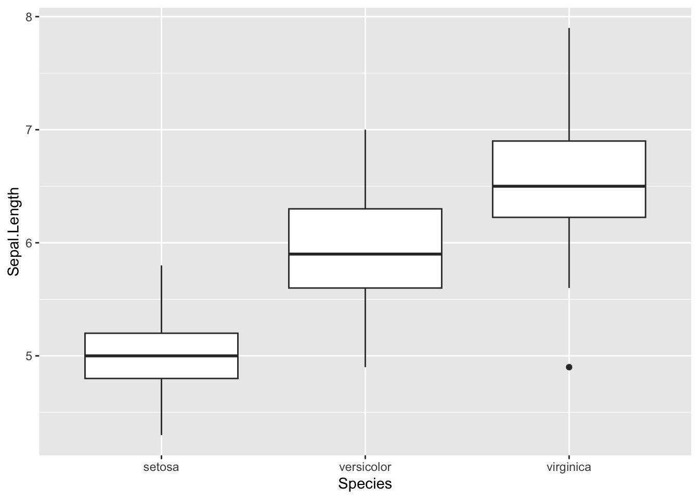
# violin plot
ggplot(iris, aes(x = Species, y = Sepal.Length)) +
geom_violin() 
Notice are violin plot doesn’t display any lines to show the mean,
median, or quantiles for the data which could be helpful. Use the help function to look up the R
documentation for geom_violin() to see how
we could add some more information to this graph.
Then adapt the code above to add quantiles to the plot.

Bar plots
Bar charts are useful for displaying count data associated with factors.
Below is code to simply display the number of rows for each species in the iris dataset
# Bar plots ----------------------
ggplot(iris, aes(x = Species)) + # we don't specify a y variable if we want sample size
geom_bar()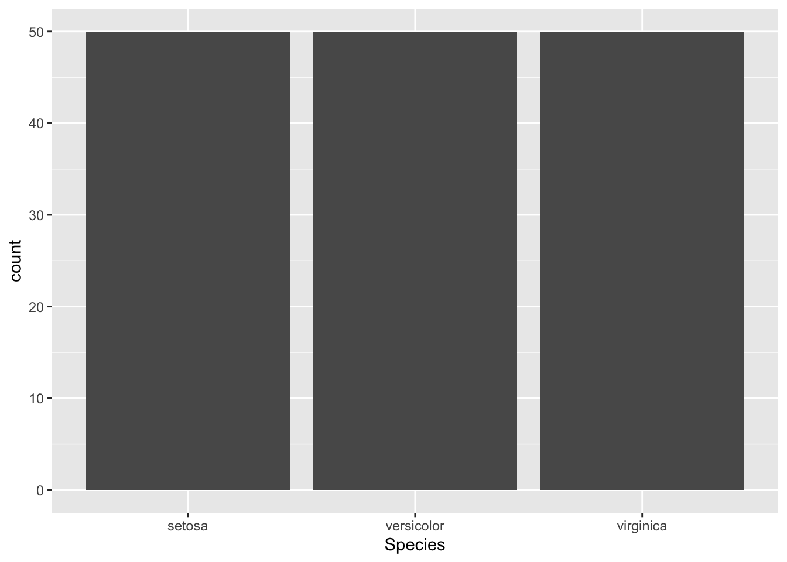
Notice we didn’t specify a ‘y’ variable above, if no ‘y’ variable is
specified geom_bar() will automatically map counts of each
x variable to the y-axis. This is useful for checking sample size.
This graph is kind of ugly since all the species have the same sample size, but we can make it look a little nicer by changing the width of the bars
# bar plot with width specified
ggplot(iris, aes(x = Species)) + # we don't specify a y variable if we want sample size
geom_bar(width = 0.5)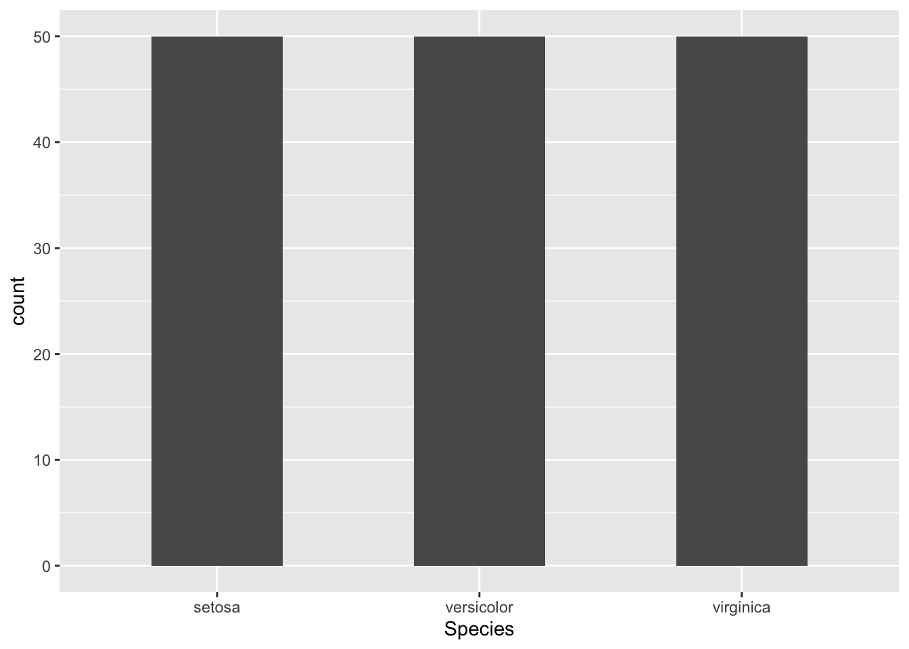
This is okay for now. We will go over many more options to make plots look nicer.
If we want to display variables from our data on both the x and y
axis we can use geom_col().
# first we need to calculate some summary statistics since these data aren't available in the current dataset
bar_heights <- iris %>%
# create groups for each species
group_by(Species) %>%
# calculate the mean sepal length for each species
summarize(meanSL = mean(Sepal.Length))
# create plot of mean sepal length for each species
ggplot(bar_heights, aes(Species, meanSL)) +
geom_col(width = 0.5)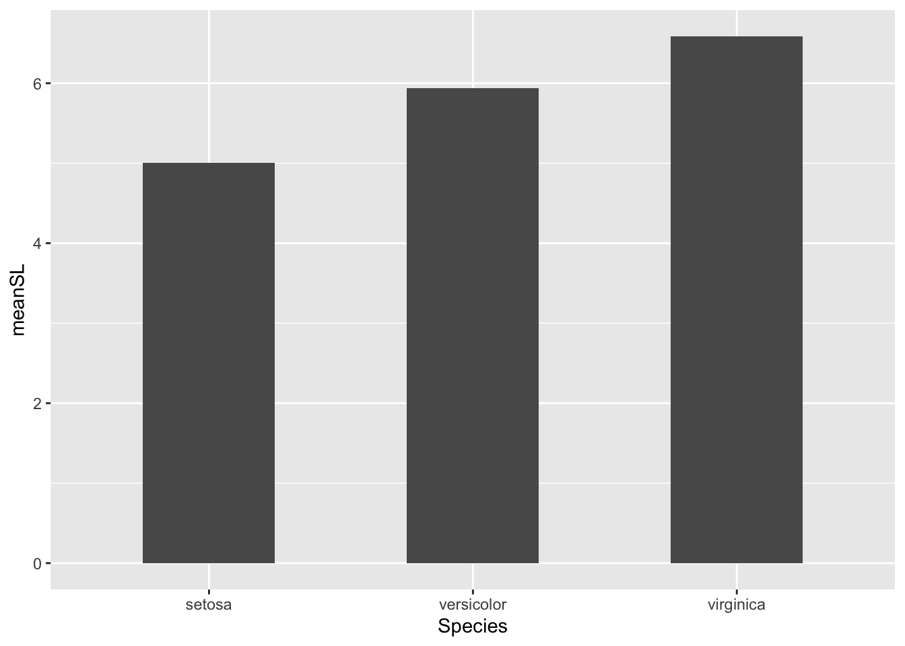
Error bars
But what if we want to have some error bars? We can add another geom to our code chunk to add error bars to the graph.
# Bar plots with error bars ----------------------
# first we need to add a few calculations to our summary data for this graph
bar_heights <- iris %>%
# create groups for each species
group_by(Species) %>%
# calculate mean, sample size (n), sd, and SE for each species sepal length
summarize(meanSL = mean(Sepal.Length),
n = n(),
sdSL = sd(Sepal.Length),
se = sdSL/sqrt(n)) # there isn't a function for SE so we have to write our own
# plot mean and SE sepal length for each species
ggplot(bar_heights, aes(x = Species, y = meanSL)) +
# add columns
geom_col(width = 0.5) +
# add error bars
geom_errorbar(aes(ymin = meanSL - 2*sdSL, # ymin specifies the lower limit of the error bar
ymax = meanSL + 2*sdSL), # ymax specifies the upper limit of the error bar
width = 0.2) 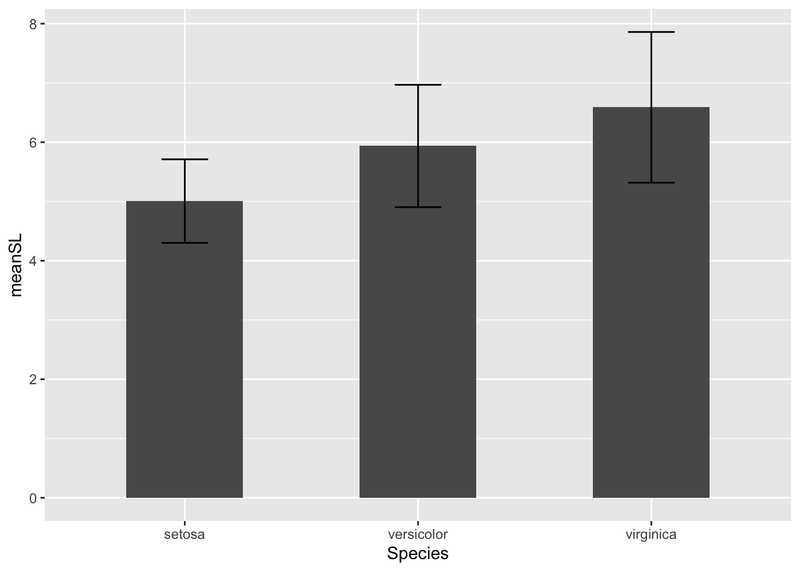
Viewing/saving/exporting plots
Saving plots (to environment)
As with anything else you want saved to your
environment, you can save plots using the *assignment
operator** (<-). Create a
simple plot using the iris data and save it to your
environment as ‘plot_t’.
What happens?
Nothing!
That’s because as with anything else you save to the environment you have to print/view it in order to see the object. In your console type ‘plot_1’ and hit enter.
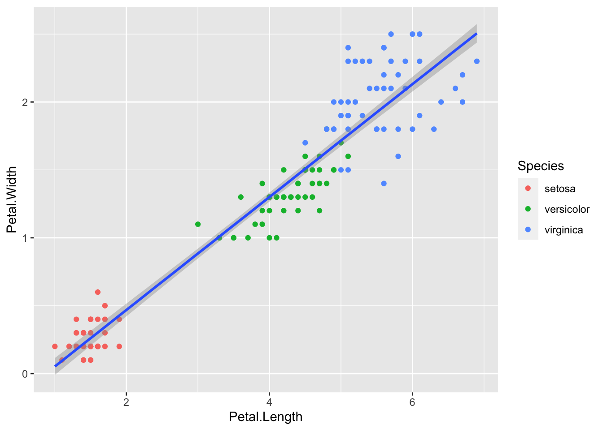
Now the plot window will open and your plot is visible.
Don’t forget this step! It is easy to do and leave you stuck wondering what was wrong with your code when all you need to do is print your plot
Exporting plots
You will often want to export your plots out of R for use in
presentations, publications, etc. The ggsave()
function exports plots. Let’s take a look at the
R documentation for ggsave().
# Export plots ----------------------
?ggsave()
# save plot_1
ggsave('iris_plot_1.tiff',
plot_1,
path = 'figures')Inside the ggsave() function we can
alter the size, file type, dpi, and much more of our graph with just a
few lines of code, making this a very useful tool when creating high
quality figures.
Combining/viewing multiple plots
Just like in base R we may want to view multiple plots in the same window, you can use the same functions we learnedin the last module, or using the ggpubr package. This package is a commonly used extension of ggplot
The ggarrange() function in the
ggpubr package will allow us to view multiple
plots saved to our environment in the same window. Here
we explore different ways of graphically representing the relationship
between tree girth and volume.
First let’s make 4 graphs of the iris data with different geoms.
# Combining plots ----------------------
# Explore different geoms with iris data
# plot the relationship as a line
plot1 <- ggplot(iris, aes(Petal.Length, Petal.Width)) +
# add line
geom_line()
# plot a smoothed "spline" fit of the relationship
plot2 <- ggplot(iris ,aes(Petal.Length, Petal.Width)) +
# add smoothed line
geom_smooth()
# plot scatterplot
plot3 <- ggplot(iris ,aes(Petal.Length, Petal.Width)) +
# add points
geom_point()
# plot scatterplot with smoothed regression line
plot4 <- ggplot(iris ,aes(Petal.Length, Petal.Width)) +
# add points
geom_point() +
# add regression line
geom_smooth()Now lets use the ggarrange()function to
view them all at once
ggarrange(plot1,
plot2,
plot3,
plot4,
labels = "auto")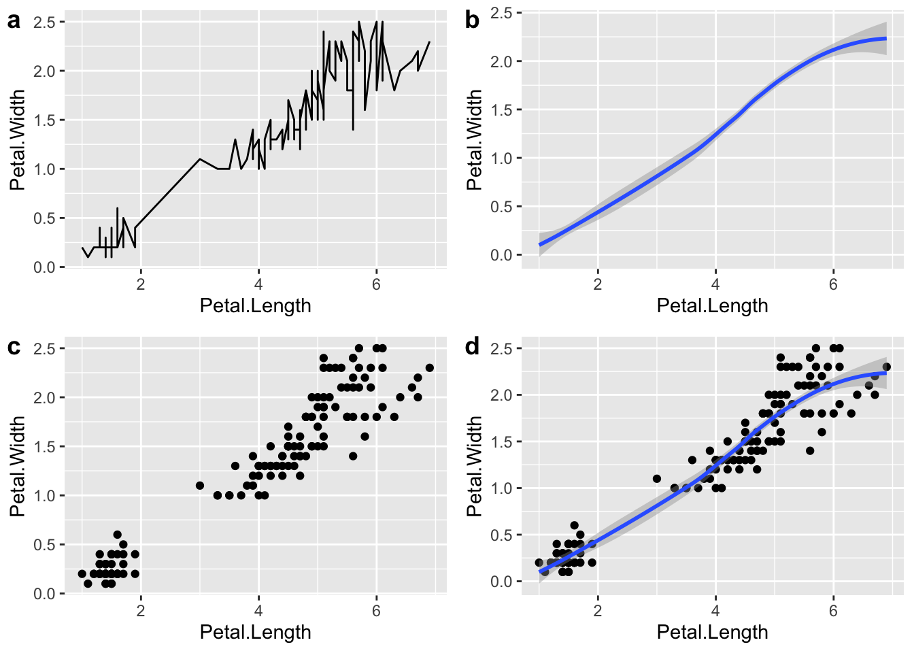
We can also use this function to combine plots and export them as one image. For example:
figure_1 <- ggarrange(plot1, plot2, plot3, plot4,
labels = c('A', 'B', 'C', 'D'),
ncol = 2,
nrow = 2)
figure_1# save to hard drive
# ggsave('figure_1.tiff',
# figure_1,
# path = 'figures')We can also alter the arrangement so one plot takes up the whole
width and the other plots are split by nesting the
ggarrange() functions.
ggarrange(plot4,
ggarrange(plot1, plot2, plot3,
ncol = 3,
labels = c('A', 'B', 'C')),
nrow = 2,
labels = 'D')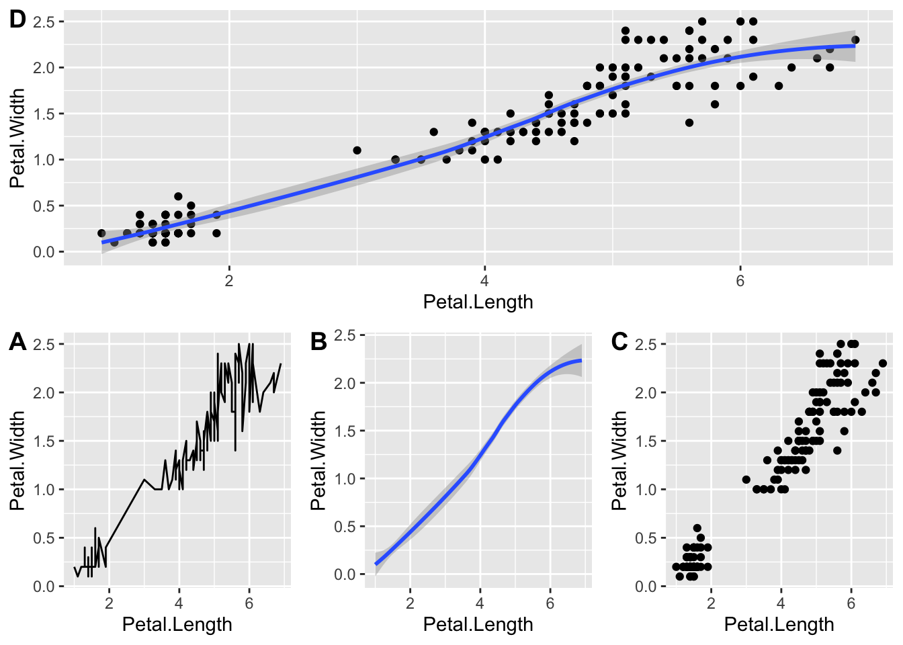
Not the most elegant but it works.
There’s tons you can do with ggarrange() and you can
check out the tutorial below if you are interested in learning more.
Changing aesthetics
If you want convey information in your data via the color, symbol, or point size, you include it as an aesthetic mapping- and link it to one of the columns in your data.
If you just want to color all the points the same way, or use the same symbol for everything, specify this outside of the aesthetic mapping.
Let’s go through a few examples changing various aesthetics
Color
Color is specified using the color= or col=
option.
Let’s try adding color to the points in our scatterplot, there are a few different ways we can do this:
# Changing aesthetics----------------------
# Color----------------------
# single color for all points by name
ggplot(iris, aes(x = Sepal.Length, y = Sepal.Width)) +
# add points by name
geom_point(col = 'blue')
# single color for all points by hex code
ggplot(iris, aes(x = Sepal.Length, y = Sepal.Width)) +
# add colored points by hex code
geom_point(col = '#33A5FF')
What about this?
# single color for all points by name
ggplot(iris, aes(x = Sepal.Length, y = Sepal.Width)) +
# add colored points by name
geom_point(aes(col = 'blue'))
What happened here? The dots aren’t blue…. but we have a legend that says colour with ‘blue’ listed.
This is because we added the color argument INSIDE the
aesthetics (ase()), so R is looking for a
variable called blue to determine how to color the points but since
there isn’t a variable called blue this is what we get instead. This is
a super common mistake I’ve done this countless times, so if your plot
turns out like this now you know what to do.
Let’s look at an example of this using an actual variable in our dataset
# try representing tree species using color
ggplot(iris, aes(x = Sepal.Length, y = Sepal.Width)) +
# add points colored by height
geom_point(aes(col = Species))
In the first two examples we chose specific colors for our points. You can identify colors by their name. There are tons of colors for ggplot and you may. find it useful to save a list such as below for future use.
You can download this one here.
 You can also use hex
codes. If you aren’t familiar with hex codes
are used in web development and are a a hex code is a representation of
how much red, green, and blue exist in a color. A hex
code consists of six characters and in R is preceded by a ‘#’.
Below are a few helpful links to get you started using hex
codes.
You can also use hex
codes. If you aren’t familiar with hex codes
are used in web development and are a a hex code is a representation of
how much red, green, and blue exist in a color. A hex
code consists of six characters and in R is preceded by a ‘#’.
Below are a few helpful links to get you started using hex
codes.
Shape
Point shape is specified using the shape= option. We can
change the shape of any points on a plot including dot-whisker plots,
scatterplots, etc.
Similar to the color argument, we can specify the shape of all points are set the shape to be based on some variable in the dataset.
# Shape----------------------
# changing point shape
# set all points to a specified shape
ggplot(iris, aes(Sepal.Length, Petal.Length)) +
# add points
geom_point(shape = 2)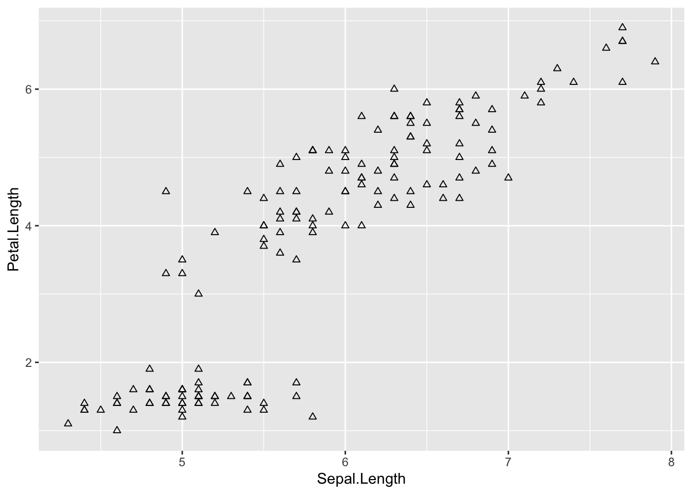
# change shape based on variable in data
ggplot(iris, aes(Sepal.Length, Petal.Length)) +
# shape represents species
geom_point(aes(shape = Species))
Fill
fill is similar to col in that it will add
color to a plot, however col only adds a border of color
around a shape on the plot while fill colors in the entire
thing. fill is applicable when using bar graphs as it will
fill in the bar, it does not work for lines graphs or scatterplots
because the shapes cannot be ‘filled in’.
Let’s see what this looks like with the iris dataset.
# Fill ----------------------
# using fill to color points
# comparing color to fill
# color
ggplot(iris, aes(Sepal.Length, Petal.Length)) +
# add points
geom_point(shape = 2,
col = 'blue')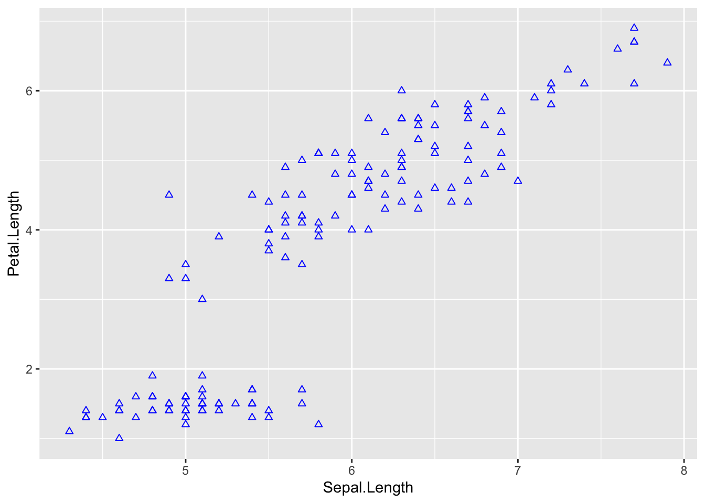
# fill
ggplot(iris, aes(Sepal.Length, Petal.Length)) +
# add points
geom_point(shape = 2,
fill = 'blue') # notice this didn't work because points can't be filled in 
# let's try with bar graphs instead
# color
ggplot(bar_heights, aes(Species, meanSL)) +
# add bars
geom_col(col = 'blue') # notice just the border is blue
# fill
ggplot(bar_heights, aes(Species, meanSL)) +
# add bars
geom_col(fill = 'blue') # now the whole bar is blue
# change fill based on variable in data
ggplot(bar_heights, aes(Species, meanSL)) +
# add bars
geom_col(aes(fill = Species)) # bar color varies by species
You’ll notice there’s a lot of repetition in the code to change various aesthetics, this is one of the nice things about ggplot it makes it easy to use and remember syntax because it’s very similar among aesthetics.
Size
Size is specified using the size= option.
# Size ----------------------
ggplot(iris, aes(Sepal.Length, Petal.Length)) +
# size represents species
geom_point(aes(size = Species)) 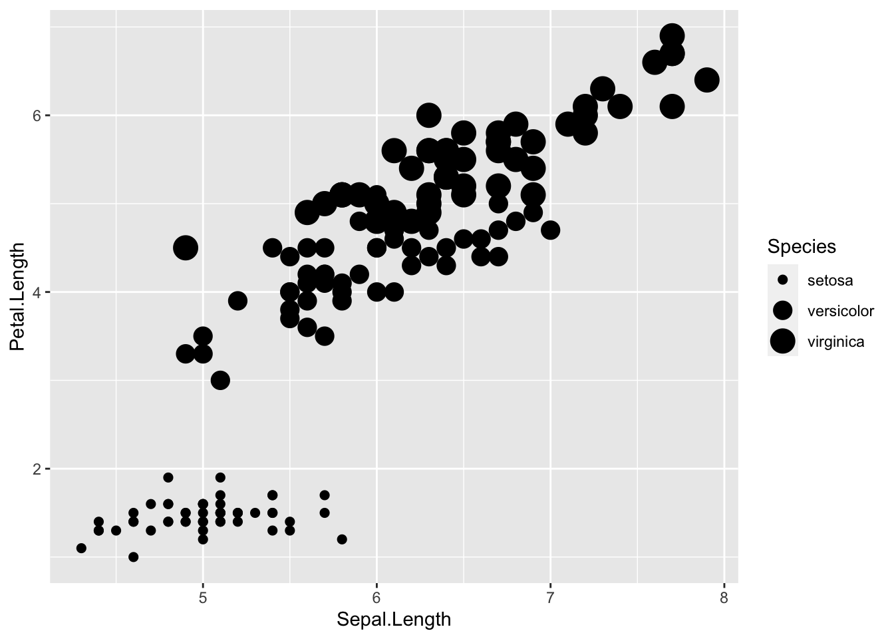
# size is same across the board
ggplot(iris, aes(Sepal.Length, Petal.Length)) +
geom_point(size = 2) 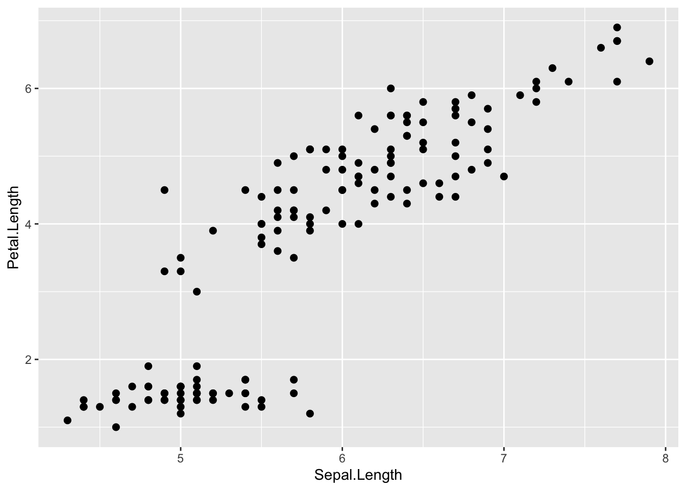
Scales
Scales control the mapping from data to aesthetics and allow us to change the mapping of data. If this doesn’t make sense right away that’s okay, we will go through some examples.
Manually set aesthetics
Often the colors ggplot chooses or the labels in the legend (e.g., what we’ve named things in the data) aren’t the best. We can manually change these using manual scales. Let’s use our code from above where we represent each iris species with different colors:
# Scales ----------------------
# manual color
# try representing iris species using color
ggplot(iris, aes(x = Sepal.Length, y = Sepal.Width)) +
# add points colored by height
geom_point(aes(color = Species)) +
# specify colors
scale_color_manual(name = 'Iris Species', # this changes the legend title
values = c('#BD6BF1', '#3829A3', '#9498D8'), # I selected these hex codes using the ColorPick Eyedropper and googline images of each iris species :)
labels = c('I. setosa', 'I. versicolor', 'I. virginica')) # this changes the labels inside the legend, these must be in the same order as the data and the colors you want for each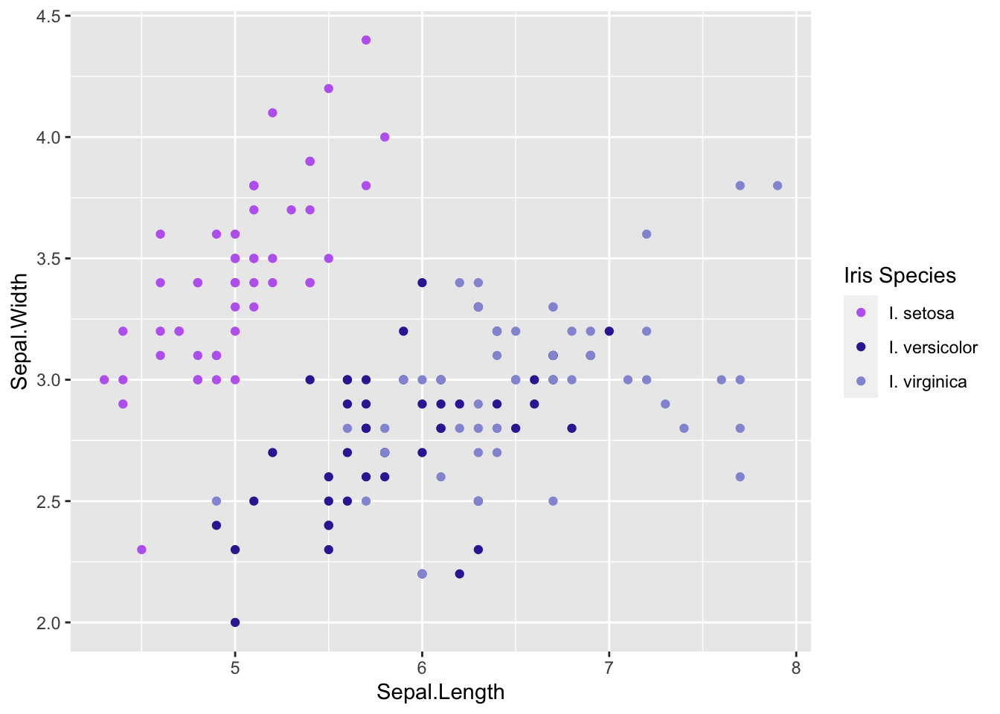
With the code above I was able to set colors of my choice for each of the species in the plot and change the title and labels in the legend.
It’s important to note that when you manually change the labels they must be in the same order ass ggplot plots them. ggplot plots variables in alphabetical/numerical order if you change the order in the
values=argument it won’t change the data it will just label the wrong thing.
If you want to change the order your data are plotted you can rename your variables so that they alphabetically or numerically the one you want first is plotted first, or you can look up ways to do this. Since we don’t have time to cover it in this course here is a useful link:
Gradients
What if we want to represent colors for a numeric variable as a gradient. If we plot a numeric variable to the color aesthetics of a geom R will automatically set a gradient.
Let’s use the trees data for this. For example, let’s say we want a color scheme where taller trees are represented by darker values of the same color.
# color gradients ----------------------
# specify data and variables
ggplot(iris, aes(x = Sepal.Length, y = Sepal.Width)) +
# add points colored by petal length
geom_point(aes(color = Petal.Length))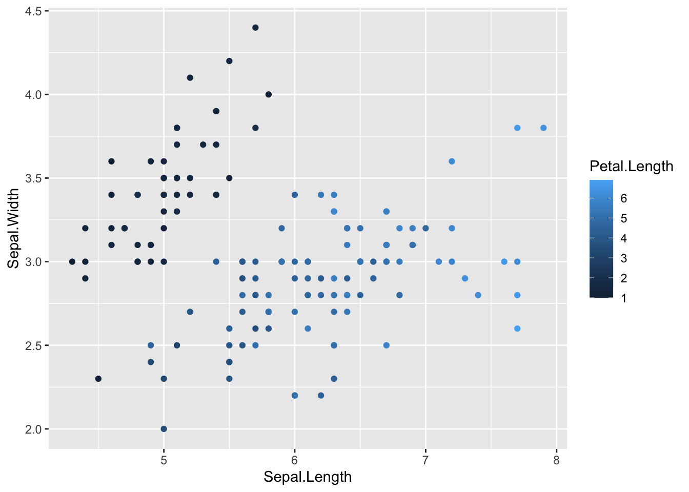
However, as we saw before, sometimes sticking to the default colors in ggplot isn’t the best choice. You might have factors representing ordered ranks, like in an experiment with different levels of light exposure, and want to represent these levels on a monochromatic scale. Or you might want to make a map displaying regions of positive or negative change in forest cover, using a diverging color scale. Or you don’t even like the default ggplot colors, and have your own preferred color schemes. It’s also important to remember that red-green colorblindness is fairly common, so if you are presenting data that must be distinguished by colors in a single plotting area, you should probably avoid this combination or combine it with changes in value (light to dark) in order for your plot to be accessible.
One method is to use scale_*_gradient.
# specify color gradient with scales
# specify data and variables
ggplot(iris, aes(x = Sepal.Length, y = Sepal.Width)) +
# add points colored by petal length
geom_point(aes(color = Petal.Length)) +
# set scales
scale_color_gradient(low = 'yellow',
high = 'green')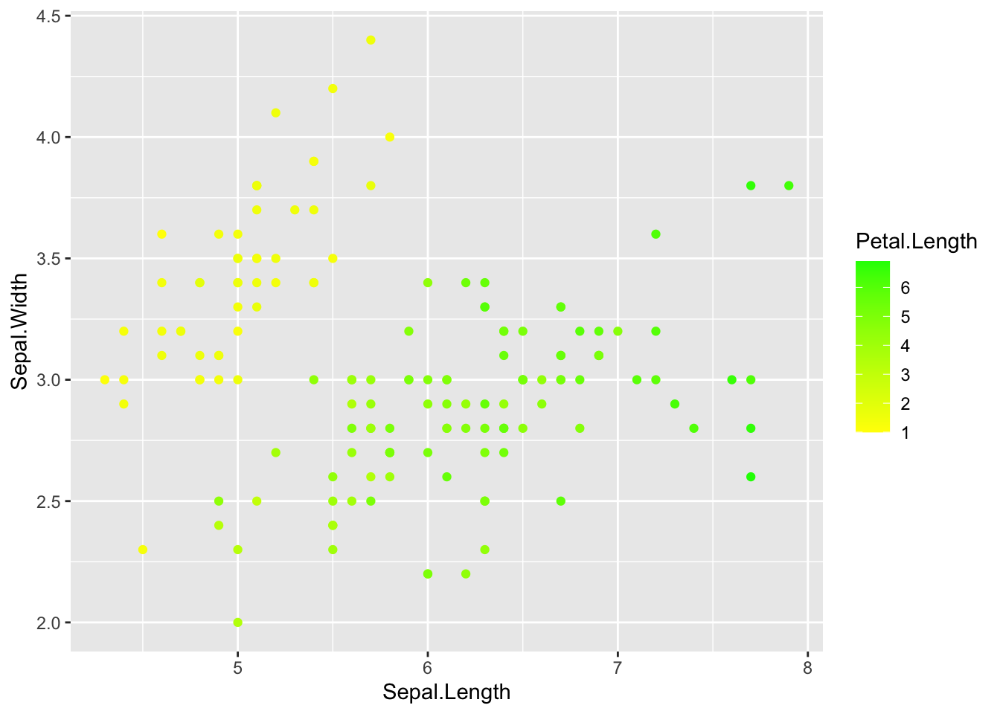
Not the best color choice but you get the idea.
Another method is to use an already composed color palette from
RColorBrewer (a package you’ll need to install). You can check out all
of the options available in RColorBrewer by entering
display.brewer.all(), which shows the
sequential palettes, then categorical palettes, than diverging
palettes.
# Playing with colors in ggplot!
display.brewer.all()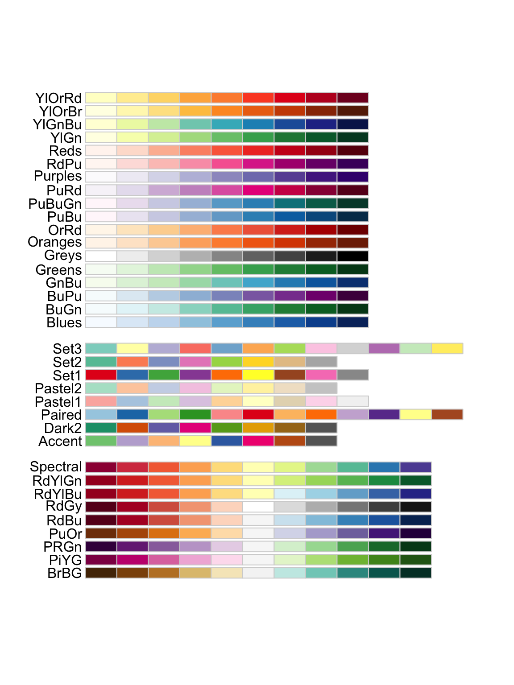
I’m going to pick the YlGn (yellow green) palette, because those seem
like good plant colors. For a continuous variable we need to use
scale_*_distiller().
# Choose a new color palette from the RColorBrewer package
# specify data and variables
ggplot(iris, aes(x = Sepal.Length, y = Sepal.Width)) +
# add points colored by petal length
geom_point(aes(color = Petal.Length)) +
# set scales
scale_color_distiller(palette = 'YlGn')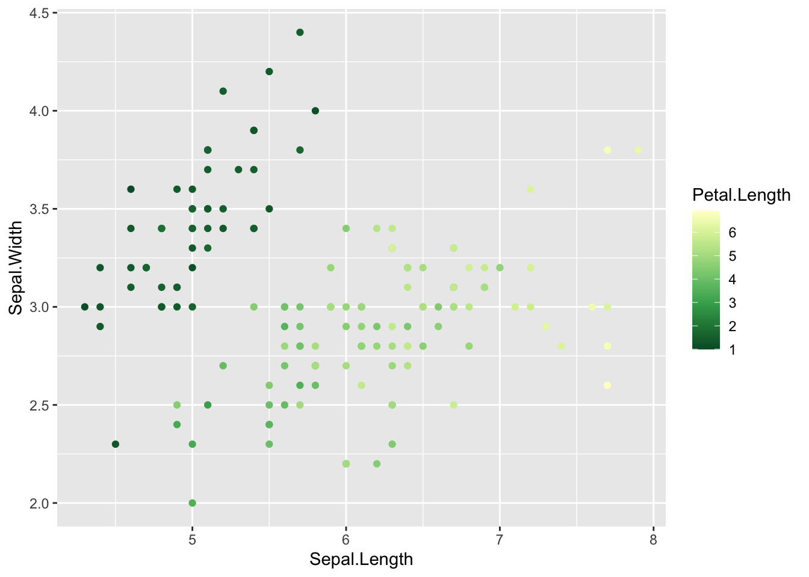
If we had discrete data (data binned) we could use
scale_*_brewer() in the same way.
Change axis range
Another thing we can do with scales is change elements of our x and y-axis. Such as the range of values they show and where the breaks occur.
Let’s change the range of values so our axis start at 0
# Axis ----------------------
ggplot(iris, aes(x = Sepal.Length, y = Sepal.Width)) +
# add points colored by height
geom_point(aes(color = Species)) +
# specify colors and legend info
scale_color_manual(name = 'Iris Species',
values = c('#BD6BF1', '#3829A3', '#9498D8'),
labels = c('I. setosa', 'I. versicolor', 'I. virginica')) +
# change axis breaks
scale_x_continuous(limits = c(0, 8), # changes the range of values for x axis
breaks = seq(0, 8, by = 2)) + # sets the breaks (where the numbers are shown) alternatively could set breaks = c(0, 2, 4, 6, 8)
scale_y_continuous(limits = c(0, 5),
breaks = seq(0, 5, by = 1))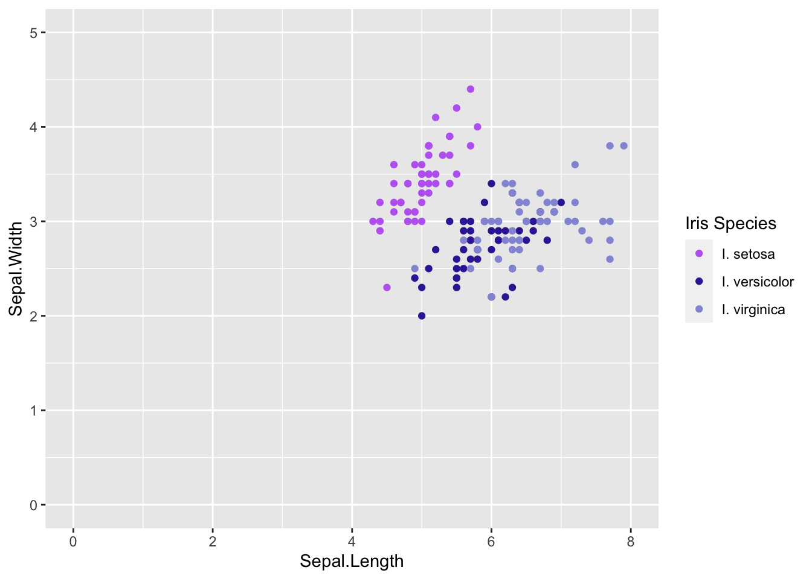
This wasn’t the best alteration for our graph since our data don’t start near zero. Alter the code above to set the x axis to go from 2-5 and y-axis 4-8 with breaks every 1 number.
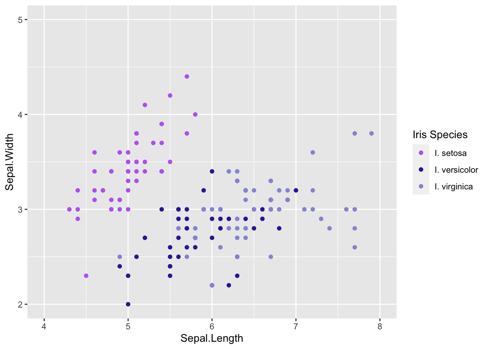
There are lots of scales depending on what type of variable you are working with and what you want to accomplish. The ggplot cheat sheet will be very helpful to explore more scales
Changing axis titles & text
Axis
Often the names we enter for are variables (which are what R uses as the axis lables by default) are not very informative. We can change these and other elements of the axis with a few simple commands.
Let’s keep adding to our graph from above to make it look nicer.
# Axis titles & text----------------------
# change axis information
ggplot(iris, aes(x = Sepal.Length, y = Sepal.Width)) +
# add points colored by height
geom_point(aes(color = Species)) +
# specify colors and legend info
scale_color_manual(values = c('#BD6BF1', '#3829A3', '#9498D8'),
labels = c('I. setosa', 'I. versicolor', 'I. virginica')) +
# change axis breaks
scale_x_continuous(limits = c(4, 8), # changes the range of values for x axis
breaks = seq(4, 8, by = 1)) + # sets the breaks (where the numbers are shown) alternatively could set breaks = c(0, 2, 4, 6, 8)
scale_y_continuous(limits = c(2, 5),
breaks = seq(2, 5, by = 1)) +
labs(x = 'Sepal length (cm)',
y = 'Sepal width (cm)',
color = 'Iris species') # we can change the legend title here using the aesthetic name instead of in scales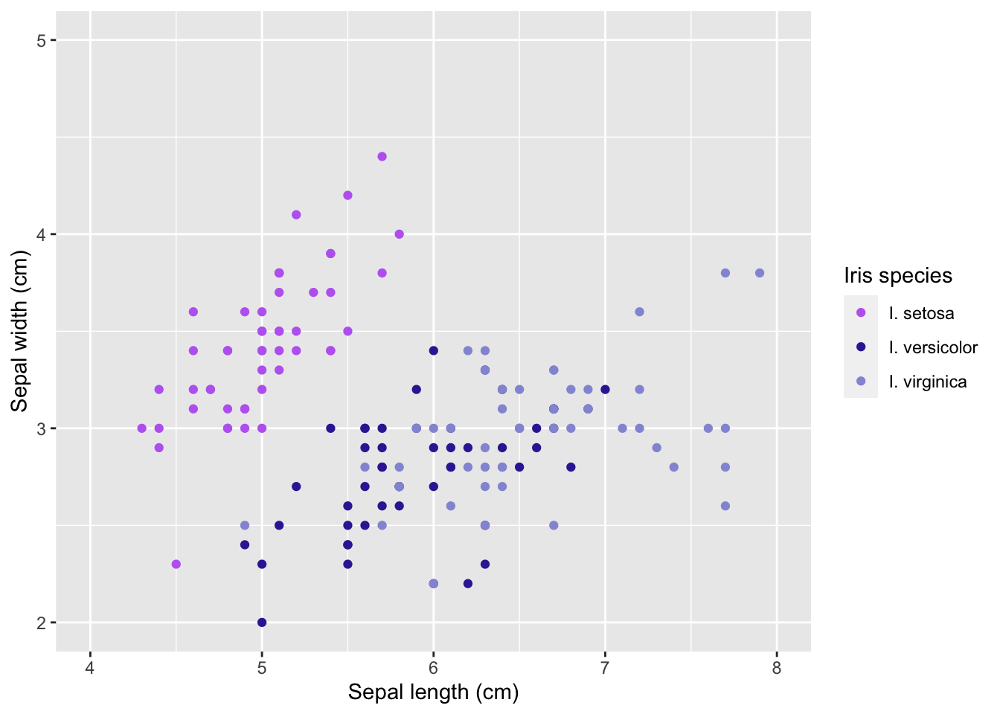
Titles & subtitles
If we have multiple plots together we can may want to add titles or subtitiles:
# Titles ----------------------
# create vector for colors
iris_colors <- c('#BD6BF1', '#3829A3', '#9498D8')
# create vector for labels
iris_labels <- c('I. setosa', 'I. versicolor', 'I. virginica')
# scatterplot
plot1 <- ggplot(iris, aes(Petal.Length, Petal.Width)) +
# add points
geom_point(aes(color = Species)) +
# specify colors and labels
scale_color_manual(values = iris_colors,
labels = iris_labels) +
# add labels
labs(x = 'Petal length (cm)',
y = 'Petal width (cm)',
subtitle = 'Scat')
# plot a smoothed "spline" fit of the relationship
plot2 <- ggplot(iris ,aes(Petal.Length, Petal.Width)) +
# add smoothed line
geom_smooth(aes(color = Species)) +
# specify colors and labels
scale_color_manual(values = iris_colors,
labels = iris_labels) +
# add labels
labs(x = 'Petal length (cm)',
y = 'Petal width (cm)',
subtitle = 'Linear regression')
# plot scatterplot
plot3 <- ggplot(iris ,aes(Species, Petal.Length)) +
# add points
geom_boxplot(aes(color = Species)) +
# specify colors and labels
scale_color_manual(values = iris_colors,
labels = iris_labels) +
# add labels
labs(x = 'Petal length (cm)',
y = 'Petal width (cm)',
subtitle = 'Boxpl0t')
# plot scatterplot with smoothed regression line
plot4 <- ggplot(iris ,aes(Petal.Length, Petal.Width)) +
# add points
geom_point(aes(color = Species)) +
# add regression line
geom_smooth(aes(color = Species)) +
# specify colors and labels
scale_color_manual(values = iris_colors,
labels = iris_labels) +
# add labels
labs(x = 'Petal length (cm)',
y = 'Petal width (cm)',
subtitle = 'Scatterplot with linear regression')
ggarrange(plot1,
plot2,
plot3,
plot4,
common.legend = TRUE,
legend = 'right',
labels = 'AUTO')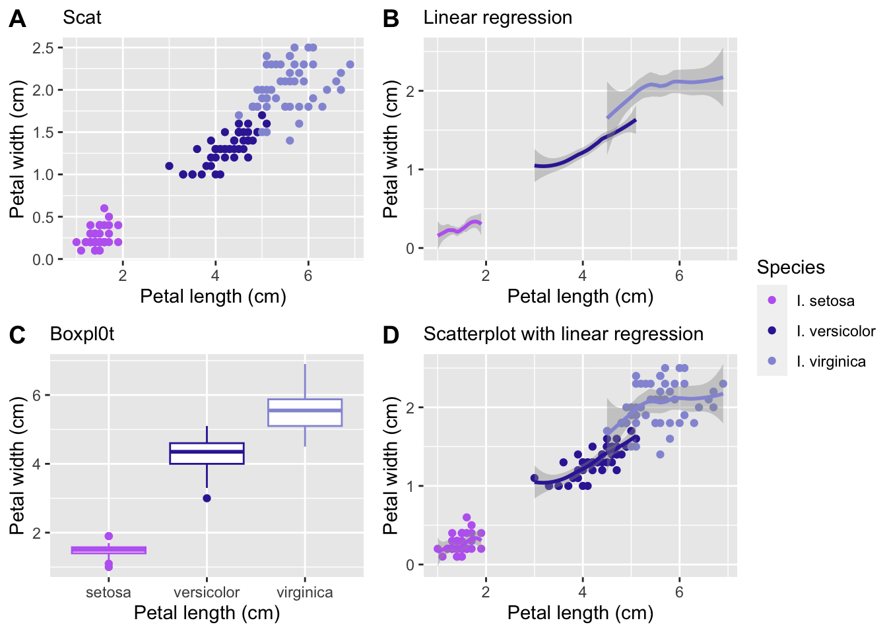
Let’s go over a few things I did above
I created two vectors, one for the colors I want in my graphs and one for the species names. This can be very useful if you are going to be making multiple graphs with the same elements. It saves you time typing them out for every plot and reduces the chance of errors.
I created four graphs with different geoms and gave them all subtitles that say what kind of plot they are
I combined them using
ggarrange()and specified that all the plots can use the same legend, where I want the legend placed (‘right’), and to create automatic uppercase labels (A-D).
If you want to check out more options for titles and subtitles the ggplot cheat sheet will be a good starting place.
Themes
You can see that the default plot includes a gray background with white gridlines. This makes all of the elements on this plot easy to see, but as you start adjusting colors and identifying your personal preferences, you’ll probably want to customize this – ggplot has a ton of options for doing so.
Preset themes
Here’s a few examples of ggplot themes:
# Themes ----------------------
# explore themes
# scatterplot theme bw
theme1 <- ggplot(iris, aes(Petal.Length, Petal.Width)) +
# add points
geom_point(aes(color = Species)) +
# specify colors and labels
scale_color_manual(values = iris_colors,
labels = iris_labels) +
# add labels
labs(x = 'Petal length (cm)',
y = 'Petal width (cm)',
subtitle = 'Theme bw') +
# add theme
theme_bw()
# scatterplot theme classic
theme2 <- ggplot(iris, aes(Petal.Length, Petal.Width)) +
# add points
geom_point(aes(color = Species)) +
# specify colors and labels
scale_color_manual(values = iris_colors,
labels = iris_labels) +
# add labels
labs(x = 'Petal length (cm)',
y = 'Petal width (cm)',
subtitle = 'Theme classic') +
# add theme
theme_classic()
# scatterplot theme minimal
theme3 <- ggplot(iris, aes(Petal.Length, Petal.Width)) +
# add points
geom_point(aes(color = Species)) +
# specify colors and labels
scale_color_manual(values = iris_colors,
labels = iris_labels) +
# add labels
labs(x = 'Petal length (cm)',
y = 'Petal width (cm)',
subtitle = 'Theme minimal') +
# add theme
theme_minimal()
# scatterplot theme dark
theme4 <- ggplot(iris, aes(Petal.Length, Petal.Width)) +
# add points
geom_point(aes(color = Species)) +
# specify colors and labels
scale_color_manual(values = iris_colors,
labels = iris_labels) +
# add labels
labs(x = 'Petal length (cm)',
y = 'Petal width (cm)',
subtitle = 'Theme dark') +
# add theme
theme_dark()
ggarrange(theme1,
theme2,
theme3,
theme4,
common.legend = TRUE,
legend = 'right')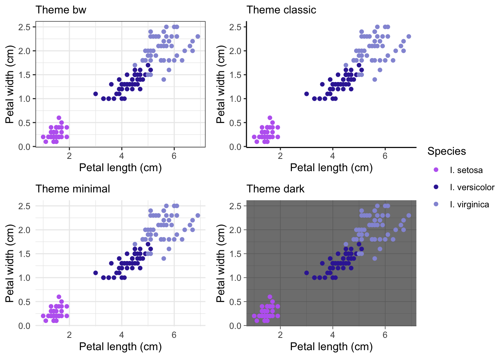
There are many other themes are available in ggplot, cowplot and other related packages
Manually alter themes
You can also manually change theme elements such as text size, gridlines, border, etc.
ggplot(iris, aes(x = Sepal.Length, y = Sepal.Width)) +
# add points colored by height
geom_point(aes(color = Species)) +
# specify colors and legend info
scale_color_manual(values = c('#BD6BF1', '#3829A3', '#9498D8'),
labels = c('I. setosa', 'I. versicolor', 'I. virginica')) +
# change axis breaks
scale_x_continuous(limits = c(4, 8), # changes the range of values for x axis
breaks = seq(4, 8, by = 1)) + # sets the breaks (where the numbers are shown) alternatively could set breaks = c(0, 2, 4, 6, 8)
scale_y_continuous(limits = c(2, 5),
breaks = seq(2, 5, by = 1)) +
labs(x = 'Sepal length (cm)',
y = 'Sepal width (cm)',
color = 'Iris species') + # we can change the legend title here using the aesthetic name instead of in scales
theme(axis.title.y = element_text(size = 14, # change size of y axis title text
color = 'red'), # change color of y axis title text
axis.title.x = element_text(size = 20), # change size of x axis title text
axis.ticks = element_blank(), # remove all axis ticks
panel.grid.major = element_line(colour = 'grey'), # change color of major gridlines
panel.grid.minor = element_blank(), # remove minor gridlines
panel.background = element_rect(fill = 'yellow'), # change panel background color
panel.border = element_rect(fill = NA, color = "black"), # make pnael border black
legend.position = "top") # move legend to top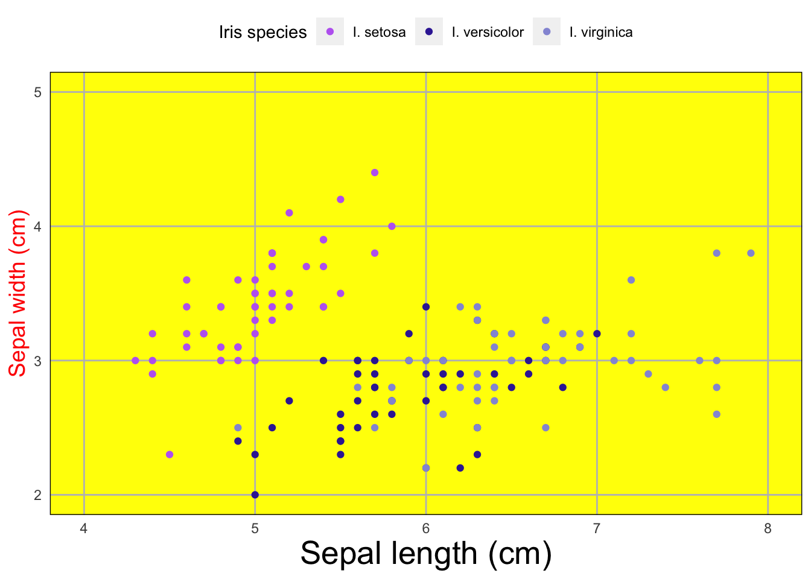
# check out the theme documentation for more things you can change, the options are endless!
# ?themeThis isn’t a very pretty graph but it demonstrates many of the
different things you can alter within the theme()
argument.
You can also set your own theme if you are going to use a lot of the same formatting for a series of graphs. This is slightly more advanced but very useful. Below is a tutorial I found for how to do this
(Create custom theme)[https://rpubs.com/mclaire19/ggplot2-custom-themes]
Example walkthrough
And for a slightly more complex example, let’s consider the built in
ToothGrowth data set, which looks at tooth growth in guinea
pigs under three different vitamin C doses and two different delivery
methods (orange juice or ascorbic acid).
# -Example walkthrough ---------------------
# ?ToothGrowth
head(ToothGrowth)## len supp dose
## 1 4.2 VC 0.5
## 2 11.5 VC 0.5
## 3 7.3 VC 0.5
## 4 5.8 VC 0.5
## 5 6.4 VC 0.5
## 6 10.0 VC 0.5First let’s get some summary data (mean, sd, and n) for each delivery method (supp) that we may want to display in our graph.
# toothgrowth plot
sumTC <- ToothGrowth %>%
# make dose a factor
mutate(dose = as.factor(dose)) %>%
# group by dose
group_by(supp,dose) %>%
# summarize mean and sd tooth length per group
summarize(mean = mean(len),
sd = sd(len),
n = n())
sumTC## # A tibble: 6 × 5
## # Groups: supp [2]
## supp dose mean sd n
## <fct> <fct> <dbl> <dbl> <int>
## 1 OJ 0.5 13.2 4.46 10
## 2 OJ 1 22.7 3.91 10
## 3 OJ 2 26.1 2.66 10
## 4 VC 0.5 7.98 2.75 10
## 5 VC 1 16.8 2.52 10
## 6 VC 2 26.1 4.80 10Below is the graph we want to make which displays the mean, sd, for each dose and delivery method with the mean values printed above each bar. 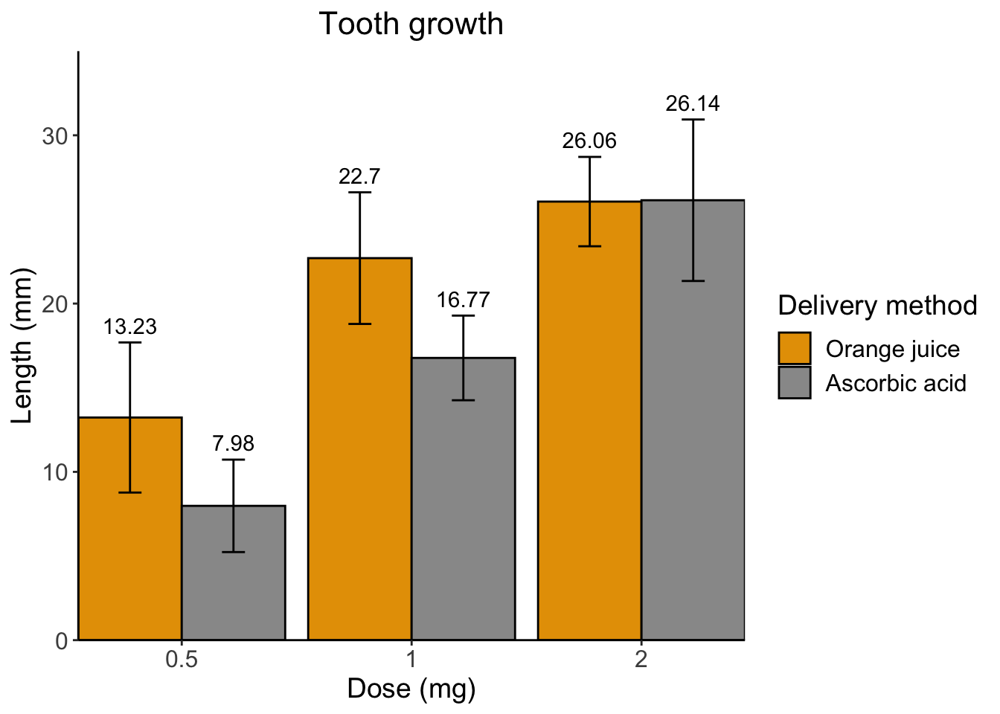
Let’s go through step-by-step how to make this graph.
First we need to call the ggplot()
function and supply the data and x and y variables.
# specify data and variables
ggplot(sumTC, aes(x = dose, y = mean))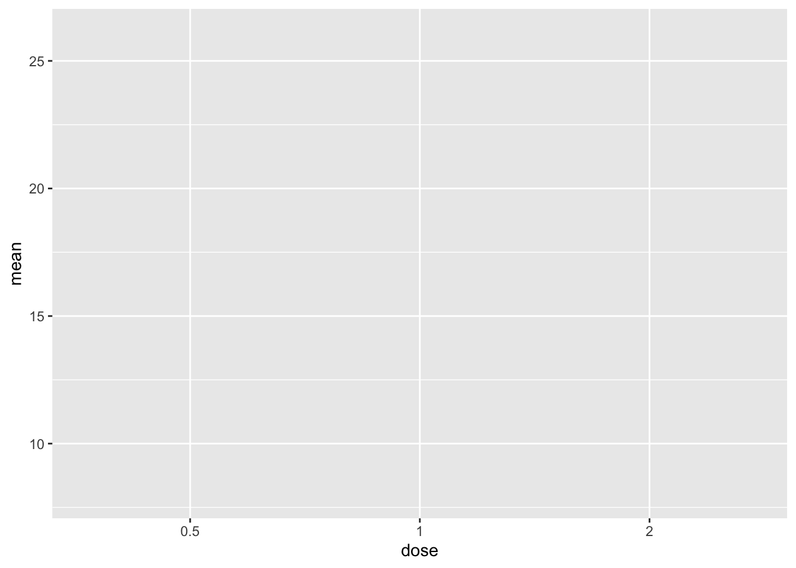
This gives us our empty plot with dose on the x-axis and mean one the y-axis
Now let’s add the data using geom_col().
# specify data and variables
ggplot(sumTC, aes(x = dose, y = mean)) +
# add data bars
geom_col()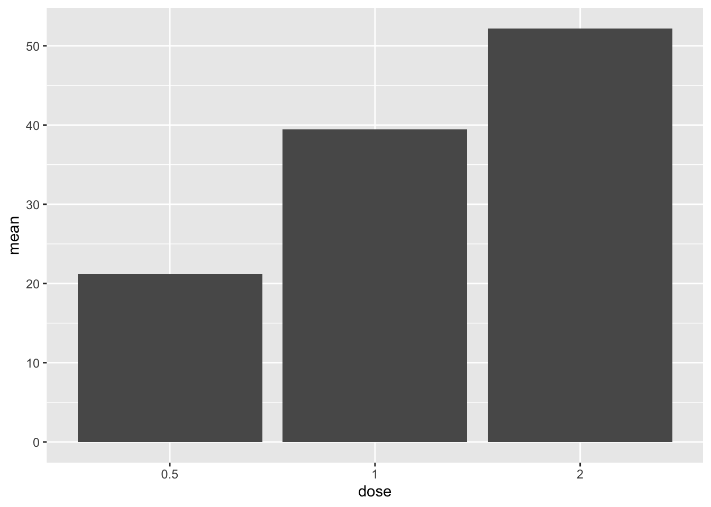
But we want our bars colored based on the ‘supp’ variable, and
outlined in black. Let’s add this in thegeom_col()
argument.
# specify data and variables
ggplot(sumTC, aes(x = dose, y = mean)) +
# add data bars
geom_col(aes(fill = supp),
color = 'black') # remember since black isn't a variable in the data this argument goes OUTSIDE the aes()
This isn’t very helpful yet because it’s stacking the two groups on
top of one another. We can use a handy argument called
position_dodge() to fix this.
# specify data and variables
ggplot(sumTC, aes(x = dose, y = mean)) +
# add data bars
geom_col(aes(fill = supp),
color = 'black',
position = position_dodge()) # this puts the groups side-by-side instead of stacked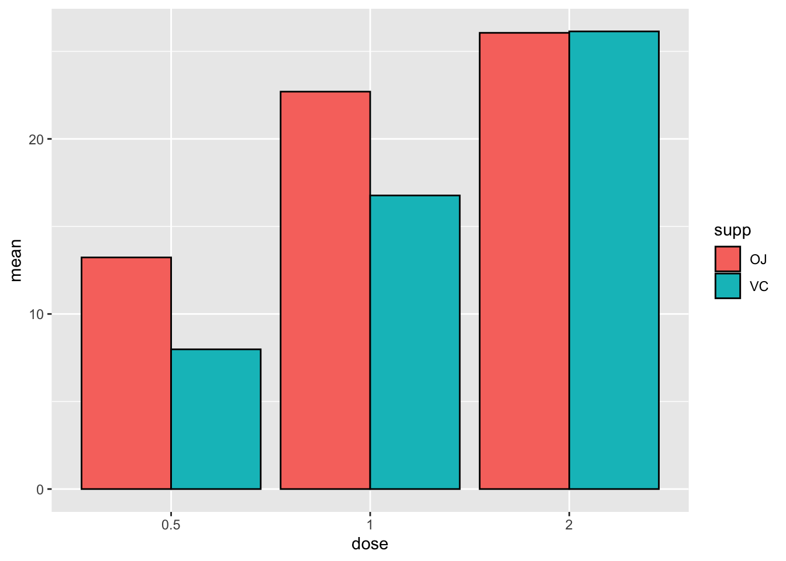
Now lets add error bars to each bar.
# specify data and variables
ggplot(sumTC, aes(x = dose, y = mean)) +
# add data bars
geom_col(aes(fill = supp),
color = 'black',
position = position_dodge()) + # this puts the groups side-by-side instead of stacked
# add error bars
geom_errorbar(aes(ymin = mean - sd,
ymax = mean + sd))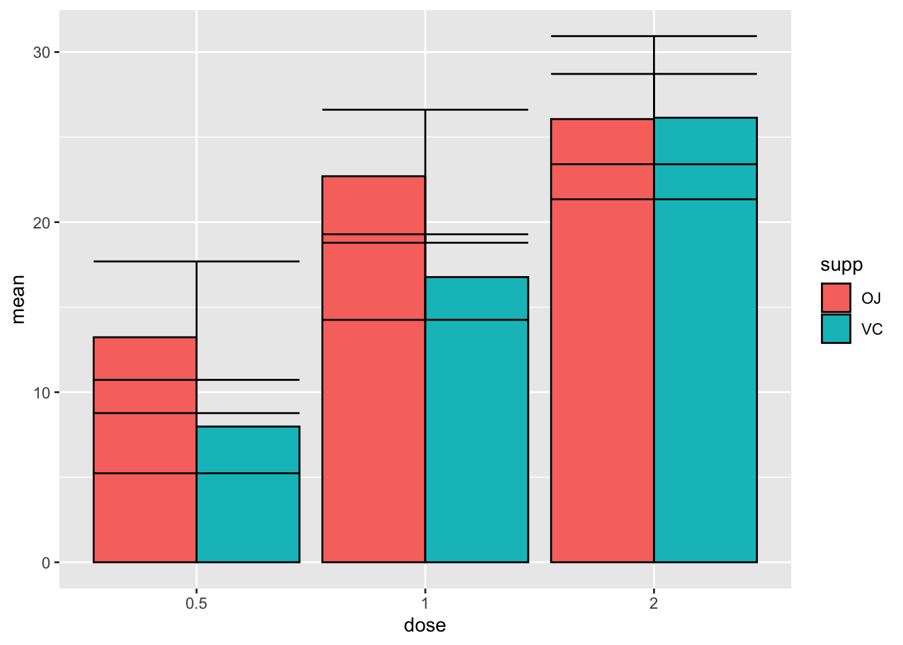
Whoops! What happened here?
# specify data and variables
ggplot(sumTC, aes(x = dose, y = mean,)) +
# add data bars
geom_col(aes(fill = supp),
color = 'black',
position = position_dodge()) + # this puts the groups side-by-side instead of stacked
# add error bars
geom_errorbar(aes(ymin = mean - sd,
ymax = mean + sd),
position = position_dodge(0.9),
width = 0.2) We didn’t use position_dodge() on the error bars so they
plotted in the center of each dose. But there’s another issue here… this
one is tricky, because we didn’t specify a fill argument in the
geom_errorbar() it doesn’t know which color to put the
error bars on. We can fix this by specifying fill in the
geom_errorbar() argument.
# specify data and variables
ggplot(sumTC, aes(x = dose, y = mean,)) +
# add data bars
geom_col(aes(fill = supp),
color = 'black',
position = position_dodge()) + # this puts the groups side-by-side instead of stacked
# add error bars
geom_errorbar(aes(ymin = mean - sd,
ymax = mean + sd,
fill = supp),
position = position_dodge(0.9),
width = 0.2) # or a simpler way is to specify the fill in the entire plot aesthetics
# specify data and variables
ggplot(sumTC, aes(x = dose, y = mean, fill = supp)) +
# add data bars
geom_col(color = 'black',
position = position_dodge()) + # this puts the groups side-by-side instead of stacked
# add error bars
geom_errorbar(aes(ymin = mean - sd,
ymax = mean + sd),
position = position_dodge(0.9),
width = 0.2) 
Now lets add the values of bar above them and don’t forget
position_dodge() so they line up properly
# specify data and variables
ggplot(sumTC, aes(x = dose, y = mean, fill = supp)) +
# add data bars
geom_col(color = 'black',
position = position_dodge()) + # this puts the groups side-by-side instead of stacked
# add error bars
geom_errorbar(aes(ymin = mean - sd,
ymax = mean + sd),
position = position_dodge(0.9),
width = 0.2) +
# add mean value above bars
geom_text(aes(label = mean),
position = position_dodge(width = 0.9))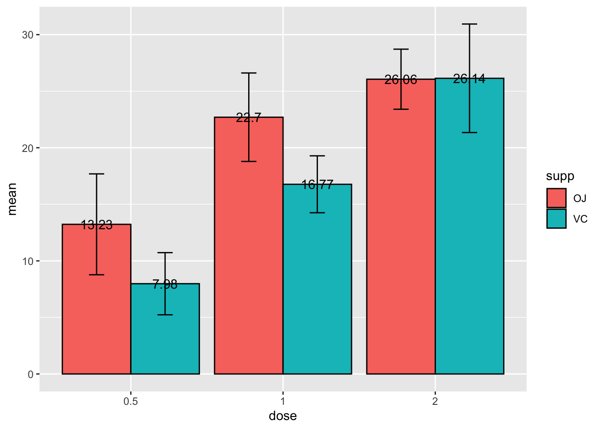
Those labels aren’t in the best spot. We can specify their
orientation in relation to the y - axis using the y =
argument.
# specify data and variables
ggplot(sumTC, aes(x = dose, y = mean, fill = supp)) +
# add data bars
geom_col(color = 'black',
position = position_dodge()) + # this puts the groups side-by-side instead of stacked
# add error bars
geom_errorbar(aes(ymin = mean - sd,
ymax = mean + sd),
position = position_dodge(0.9),
width = 0.2) +
# add mean value above bars
geom_text(aes(label = mean,
y = mean + (sd + 1)),
position = position_dodge(width = 0.9))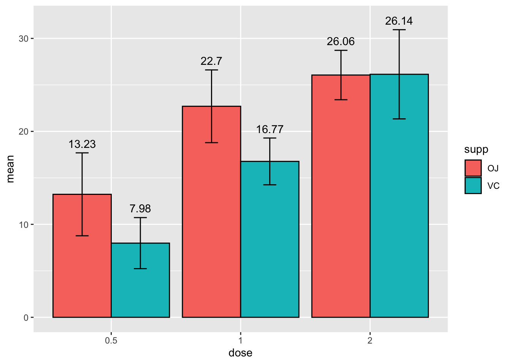
Much better! Now let’s change the labels so they are a bit more informative.
# specify data and variables
ggplot(sumTC, aes(x = dose, y = mean, fill = supp)) +
# add data bars
geom_col(color = 'black',
position = position_dodge()) + # this puts the groups side-by-side instead of stacked
# add error bars
geom_errorbar(aes(ymin = mean - sd,
ymax = mean + sd),
position = position_dodge(0.9),
width = 0.2) +
# add mean value above bars
geom_text(aes(label = mean,
y = mean + (sd + 1)),
position = position_dodge(width = 0.9)) +
# add labels
labs(title = "Tooth growth",
x= "Dose (mg)",
y = "Length (mm)" ,
fill = 'Delivery method') 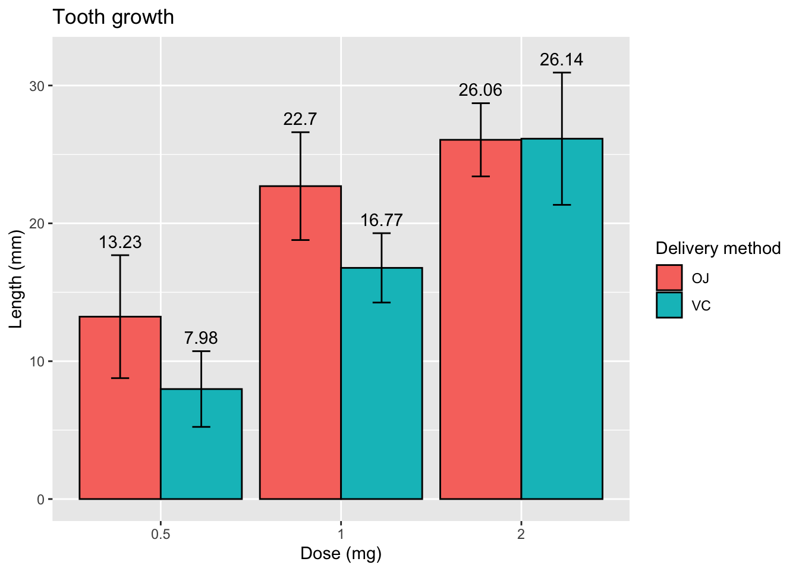
Next let’s adjust the size of some of the text and other theme elements so it is a bit more readbale and pretty.
# specify data and variables
ggplot(sumTC, aes(x = dose, y = mean, fill = supp)) +
# add data bars
geom_col(color = 'black',
position = position_dodge()) + # this puts the groups side-by-side instead of stacked
# add error bars
geom_errorbar(aes(ymin = mean - sd,
ymax = mean + sd),
position = position_dodge(0.9),
width = 0.2) +
# add mean value above bars
geom_text(aes(label = mean,
y = mean + (sd + 1)),
position = position_dodge(width = 0.9)) +
# add labels
labs(title = "Tooth growth",
x= "Dose (mg)",
y = "Length (mm)" ,
fill = 'Delivery method') +
# add theme
theme_classic() +
theme(axis.text = element_text(size = 12),
axis.title = element_text(size = 14),
plot.title = element_text(hjust = 0.5,
size = 16),
legend.text = element_text(size = 12),
legend.title = element_text(size = 14)) 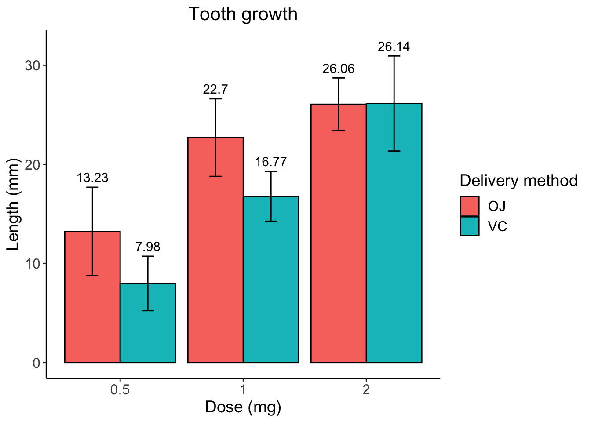
Now let’s change these awful plotting colors.
# specify data and variables
ggplot(sumTC, aes(x = dose, y = mean, fill = supp)) +
# add data bars
geom_col(color = 'black',
position = position_dodge()) + # this puts the groups side-by-side instead of stacked
# add error bars
geom_errorbar(aes(ymin = mean - sd,
ymax = mean + sd),
position = position_dodge(0.9),
width = 0.2) +
# add mean value above bars
geom_text(aes(label = mean,
y = mean + (sd + 1)),
position = position_dodge(width = 0.9)) +
# add labels
labs(title = "Tooth growth",
x= "Dose (mg)",
y = "Length (mm)" ,
fill = 'Delivery method') +
# add theme
theme_classic() +
theme(axis.text = element_text(size = 12),
axis.title = element_text(size = 14),
plot.title = element_text(hjust = 0.5,
size = 16),
legend.text = element_text(size = 12),
legend.title = element_text(size = 14)) +
# manually alter colors
scale_fill_manual(values = c('#E69F00', '#999999'),
labels = c('Orange juice', 'Ascorbic acid'))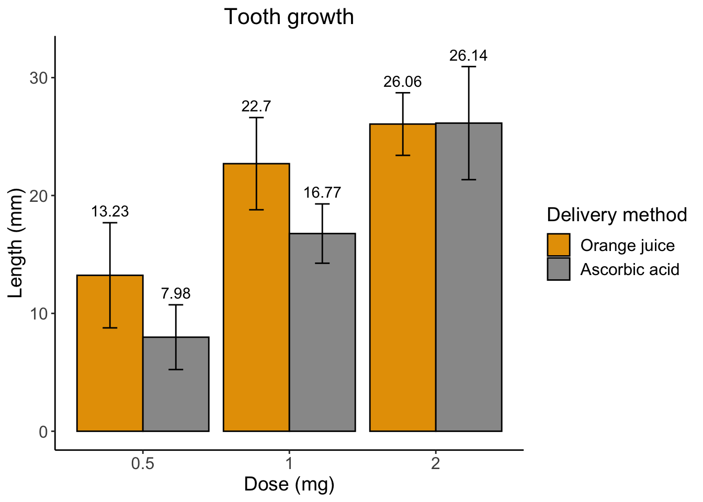
Finally, I don’t like the awkward spacing between the graph elements and the axis. We can get rid of that using some scales functions.
# specify data and variables
ggplot(sumTC, aes(x = dose, y = mean, fill = supp)) +
# add data bars
geom_col(color = 'black',
position = position_dodge()) + # this puts the groups side-by-side instead of stacked
# add error bars
geom_errorbar(aes(ymin = mean - sd,
ymax = mean + sd),
position = position_dodge(0.9),
width = 0.2) +
# add mean value above bars
geom_text(aes(label = mean,
y = mean + (sd + 1)),
position = position_dodge(width = 0.9)) +
# add labels
labs(title = "Tooth growth",
x= "Dose (mg)",
y = "Length (mm)" ,
fill = 'Delivery method') +
# add theme
theme_classic() +
theme(axis.text = element_text(size = 12),
axis.title = element_text(size = 14),
plot.title = element_text(hjust = 0.5,
size = 16),
legend.text = element_text(size = 12),
legend.title = element_text(size = 14)) +
# manually alter colors
scale_fill_manual(values = c('#E69F00', '#999999'),
labels = c('Orange juice', 'Ascorbic acid')) +
# remove extra space between graph and x axis
scale_x_discrete(expand = c(0, 0)) +
scale_y_continuous(expand = c(0, 0),
limits = c(0, 35))
Ta-da!
Hopefully now you can see how useful ggplot can be. And also how helpful it is to following the best coding practices keeping your code well spaced, indented, and annotated. If not check out the code below, this is code for the same plot but not following best coding practices and I’ve made a mistake, can you find it?
# example of messy code
ggplot(sumTC, aes(x = dose, y = mean, fill = supp)) + geom_col(color = 'black', position = position_dodge()) +
geom_errorbar(aes(ymin=mean -sd, ymax = mean + sd),position = position_dodge(0.9),width = 0.2) +
geom_text(aes(label=mean,y =mean +(sd +1)),position = position_dodge(width = 0.9)) + abs(title = "Tooth growth",
x= "Dose (mg)", y = "Length (mm)" ,fill = 'Delivery method') +
theme_classic() +
theme(axis.text = element_text(size = 12),axis.title = element_text(size = 14), plot.title = element_text(hjust = 0.5,size = 16),
legend.text = element_text(size = 12),legend.title = element_text(size = 14)) +
scale_fill_manual(values = c('#E69F00', '#999999'),labels = c('Orange juice', 'Ascorbic acid')) +
scale_x_discrete(expand = c(0, 0)) +cale_y_continuous(expand = c(0, 0),
limits = c(0, 35))Beyond ggplot
ggplot contains an incredibly rich and powerful set of tools for visualizing data. But ggplot and base R are not your only options! A variety of packages exist for visualization, including:
ggplot extensions
Several packages have been created that build off of ggplot’s syntax with additional functions. You can find a list of them here.
Technique-specific plotting libraries
Several analytical packages come with their own plotting functions that produce some very nice visualizations. There are dozens out there, but a few of them are visreg for regression plots, corrplot (and its ggplot counterpart, ggcorrplot) for graphical presentation of correlation matrices, and rpart.plot as a companion to the decision tree package rpart.
Interactive plots: leaflet and plotly
Increasingly, scientific journals are providing platforms for interactive graphics on their websites to accompany published articles. Interactive plots are also popular for personal, lab, and organizational websites, and they can provide another option for your own data exploration. Two of the most popular in R are plotly, which offers a huge variety of 2D and 3D plots, and leaflet, which is specifically for mapping.
Practice problems
These practice problems will incorporate some data manipulation from yesterday as well as data visualization from today. *
1 Boxplot
Using the built in PlantGrowth dataset make a plot that meets the following requirements
Boxplot of weight for each group
Filled by group (choose some greyscale colors) and outlined in black
Informative axis titles and text
Readable text size
No gridlines
No legend
plant_boxplot <- ggplot(PlantGrowth, aes(x = group, y = weight)) +
# add boxplots filled by group
geom_boxplot(aes(fill = group),
color = 'black') + # outline in black
labs(x = 'Treatment group',
y = 'Weight (g)') + # I am just guessing it is in grams since the R documentation did not say
# select greyscale colors
scale_fill_manual(values = c('#DDDDDD', '#888888', '#444444')) +
# change axis labels
scale_x_discrete(labels = c('Control', 'Treatment 1', 'Treatment 2')) +
# select theme with no gridlines
theme_classic() +
# remove legend and increase text size
theme(legend.position = 'NONE',
axis.text = element_text(size = 12),
axis.title = element_text(size = 14)) 2 Scatterplot
Using the built in trees data make a plot that meets the following requirements
Scatterplot with girth as a function of height
Change the points plus signs
Informative axis titles and text
Readable text size
Informative title that is centered at the top
axis with breaks every 5 units starting at a number divisible by 5
Gridlines
# specify data and variables
trees_scatterplot <- ggplot(trees, aes(x = Height, y = Girth)) +
# add points as plus signs
geom_point(shape = 3,
size = 4) +
# create informative labels and title
labs(x = 'Height (ft)',
y = 'Diameter (in)',
title = 'Black Cherry Tree Measurements') +
# add breaks based on range of data
scale_x_continuous(breaks = seq(60, 85, by = 5)) +
scale_y_continuous(breaks = seq(5, 20, by = 5)) +
# choose theme with gridlines
theme_bw() +
# adjust text and title
theme(plot.title = element_text(hjust = 0.5,
size = 16),
axis.text = element_text(size = 12),
axis.title = element_text(size = 14))3 Read/format data
For the next three problems you will be using the ‘bear_2008_2016.csv’ data
Please read in the data according to the following guidelines
Save it as ‘bears’
Set all variable names to lowercase
Keep only points where damage is 1
Keep only the following columns (damage, year, targetspp, bear_abund, landcover_code, altitude, human_population, disto_to_forest, and dist_to_town)
*You may have to do some other data manipulation later on for each graph
# read in bear data
bears <- read.csv('data/bear_2008_2016.csv') %>%
# set column names to lowercase
set_names(
names(.) %>% # the period here is a placeholder for the data it tells R to use the element before the last pipe (e.g., turtles.df)
tolower()) %>%
# select only damage points
filter(damage == 1) %>%
# select specified columns
select(damage, year, targetspp, bear_abund:dist_to_town)
str(bears)## 'data.frame': 756 obs. of 9 variables:
## $ damage : int 1 1 1 1 1 1 1 1 1 1 ...
## $ year : int 2008 2008 2008 2008 2008 2008 2008 2008 2008 2008 ...
## $ targetspp : chr "bovine" "bovine" "ovine" "ovine" ...
## $ bear_abund : int 38 38 40 40 36 22 40 56 56 25 ...
## $ landcover_code : int 211 231 324 324 321 321 112 112 112 112 ...
## $ altitude : int 558 608 570 570 1410 1068 516 533 553 635 ...
## $ human_population: int 10 0 0 0 0 0 609 431 39 367 ...
## $ dist_to_forest : num 649.3 361.8 79.2 82.5 105.7 ...
## $ dist_to_town : num 613 843 5953 5950 7190 ...# filter data to only damage points4 Bar graph
Create a plot using the bear data so it meets the following criteria
Bar graph showing the total number of livestock events per year per livestock type
Bars colored by livestock type (manually set the colors)
Informative title, caption, and axis with readable text size
y axis breaks every 20
No ticks on x - axis and years at a 45 degree angle
no legend
No gridlines and only borders on the left and bottom of graph
# mutate data so year and targetspp are factors
bears_summary <- bears %>%
# change variables to factor
mutate(year = as.factor(year),
targetspp = as.factor(targetspp))
bear_damage_bargraph <- ggplot(bears_summary, aes( x = year)) +
# add bars
geom_bar(aes(fill = targetspp),
position = position_dodge()) +
# specify colors and labels
scale_fill_manual(name = 'Livestock type',
values = c('#A31E17', '#4F3124', '#AF9985'),
labels = c('Other', 'Cows', 'Sheep')) +
scale_y_continuous(expand = c(0,0),
breaks = seq(0, 80, by = 20)) +
# add labels, caption, and title
labs(x = 'Year',
y = 'Number of events',
title = 'Reported livestock damage by brown bears',
caption = str_wrap('The total number of reported livestock damage events caused by brown bears in Romania per year and livestock type (tan = sheep, brown = cows, red = other livesotock [e.g. chickens]) from 2008 to 2016.',
width = 90)) +
theme_classic() +
theme(axis.ticks.x = element_blank(),
axis.text.x = element_text(size = 12,
angle = 45,
vjust = 0.7),
axis.text.y = element_text(size = 12),
axis.title = element_text(size = 14),
plot.title = element_text(size = 18),
legend.position = 'NONE',
plot.caption = element_text(size = 12,
hjust = 0))Combine multiple graphs
For this problem you’ll need to make a change to the data
- Create a new column the combines values from the landcover
code
art_surfaces = 112, 121, 131
ag = 211, 221, 222, 242, 243
open = 231, 231
forest = 311, 312, 313, 324
Then you will need to make two graphs using this new column
Grouped landcover type and dist_to_forest
Grouped landcover type and dist_to_town
Then combine them into one plot with a common legend.
The graphs should all meet the following criteria
Raw data plotted hint: use
geom_jitter()to avoid having all points stacked on top of eachotherPoints shaped and colored by targetspp
manually set the color hint to get one legend per plot you will also need to manually set the shape using the same name and labels
Informative and readable axis and text
# create vectors for landcover types
art_surfaces <- c(112,121,131)
ag <- c(211,221,222, 242,243)
open <- c(231, 321)
forest <- c(311,312,313, 324)
bears_cows <- bears %>%
# keep only data for cows
#filter(targetspp == 'bovine') %>%
# combine landcover types using case_when
mutate(landcover_grouped = case_when(landcover_code %in% art_surfaces ~ 'art_surfaces',
landcover_code %in% ag ~ 'ag',
landcover_code %in% open ~ 'open',
landcover_code %in% forest ~ 'forest'))
str(bears_cows)## 'data.frame': 756 obs. of 10 variables:
## $ damage : int 1 1 1 1 1 1 1 1 1 1 ...
## $ year : int 2008 2008 2008 2008 2008 2008 2008 2008 2008 2008 ...
## $ targetspp : chr "bovine" "bovine" "ovine" "ovine" ...
## $ bear_abund : int 38 38 40 40 36 22 40 56 56 25 ...
## $ landcover_code : int 211 231 324 324 321 321 112 112 112 112 ...
## $ altitude : int 558 608 570 570 1410 1068 516 533 553 635 ...
## $ human_population : int 10 0 0 0 0 0 609 431 39 367 ...
## $ dist_to_forest : num 649.3 361.8 79.2 82.5 105.7 ...
## $ dist_to_town : num 613 843 5953 5950 7190 ...
## $ landcover_grouped: chr "ag" "open" "forest" "forest" ...# create vectors for plot colors and labels
spp_colors <- c('#A31E17', '#4F3124', '#AF9985')
spp_shapes = c(17, 16, 15)
spp_labels <- c('Other', 'Cows', 'Sheep')
# plot 1
# specify data and variables
plot_5.1 <- ggplot(bears_cows, aes(x = landcover_grouped, y = dist_to_forest)) +
# add points
geom_jitter(aes(color = targetspp,
shape = targetspp),
width = 0.4, # this changes the amount of 'jitter'
alpha = 0.6, # this sets opacity
size = 2) +
# manually set colors
scale_color_manual(name = 'Livestock type',
values = spp_colors,
labels = spp_labels) +
scale_shape_manual(name = 'Livestock type',
values = spp_shapes,
labels = spp_labels) +
scale_x_discrete(labels = c('Agriculture', 'Artifical', 'Forest', 'Open')) +
# informative labels
labs(x = 'Landcover type',
y = 'Distance to forest (m)') +
# add theme elements
theme_bw() +
theme(axis.text = element_text(size = 12),
axis.title = element_text(size = 14),
legend.text = element_text(size = 12),
legend.title = element_text(size = 14))
# plot 2
# specify data and variables
plot_5.2 <- ggplot(bears_cows, aes(x = landcover_grouped, y = dist_to_town)) +
# add points
geom_jitter(aes(color = targetspp,
shape = targetspp),
width = 0.4, # this changes the amount of 'jitter'
alpha = 0.6, # this sets opacity
size = 2) +
# manually set colors
scale_color_manual(name = 'Livestock type',
values = spp_colors,
labels = spp_labels) +
scale_shape_manual(name = 'Livestock type',
values = spp_shapes,
labels = spp_labels) +
scale_x_discrete(labels = c('Agriculture', 'Artifical', 'Forest', 'Open')) +
# informative labels
labs(x = 'Landcover type',
y = 'Distance to town (m)') +
# add theme elements
theme_bw() +
theme(axis.text = element_text(size = 12),
axis.title = element_text(size = 14),
legend.text = element_text(size = 12),
legend.title = element_text(size = 14))
plot_combined <- ggarrange(plot_5.1, plot_5.2,
common.legend = TRUE)‘Answers’ (graphs)
1 Boxplot

2 Scatterplot

4 Bar graph

5 Combined plots

Post course survey
Before you leave today please take a few moments to complete the post-course survey.